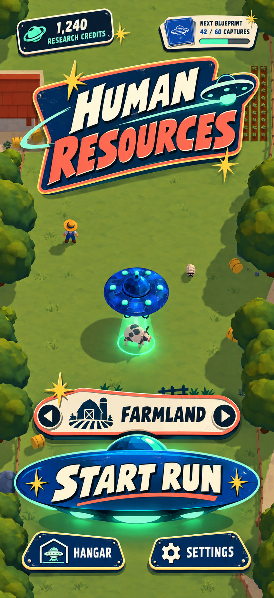
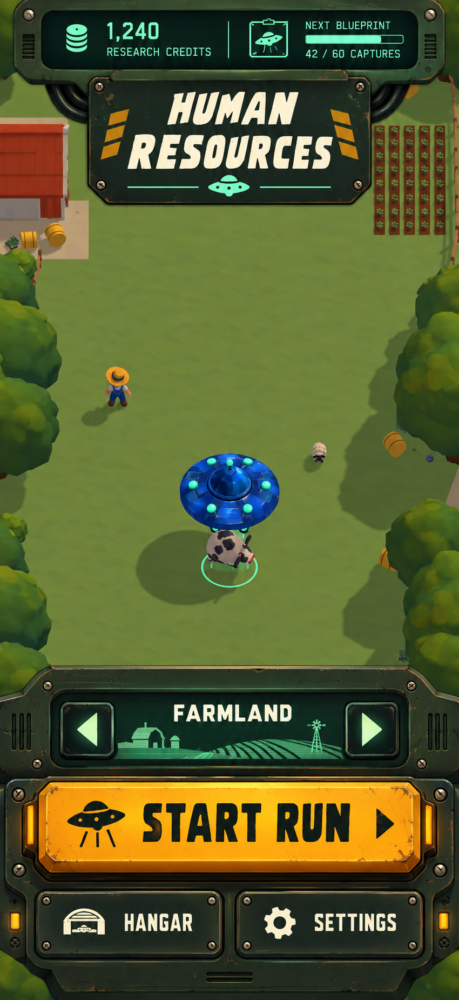
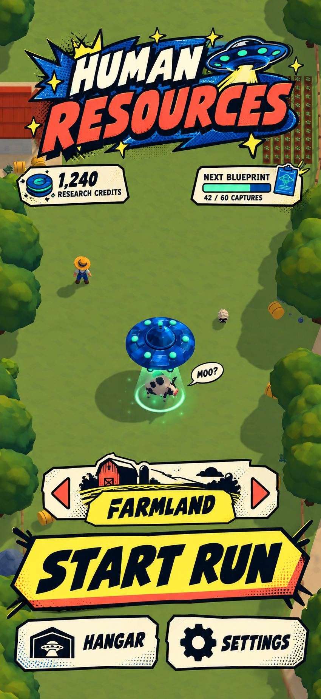
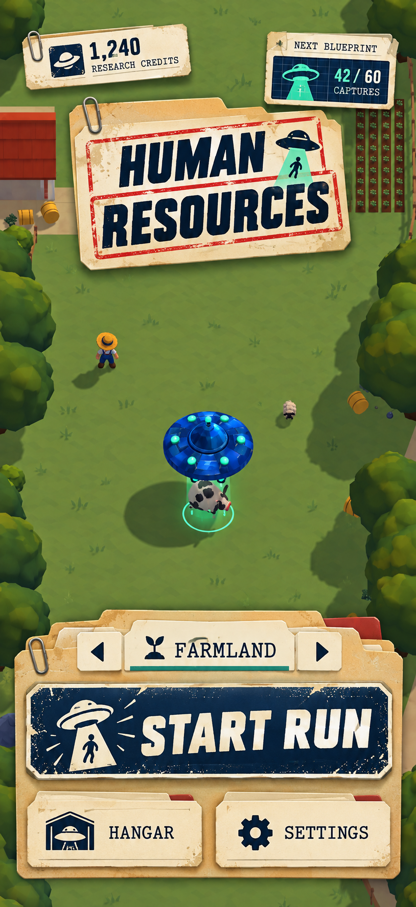
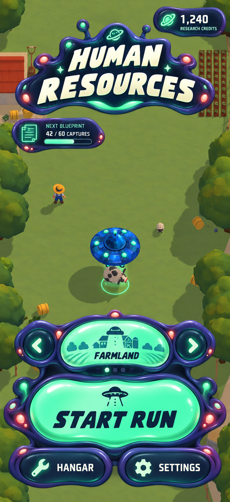
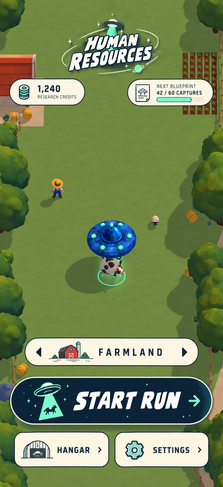
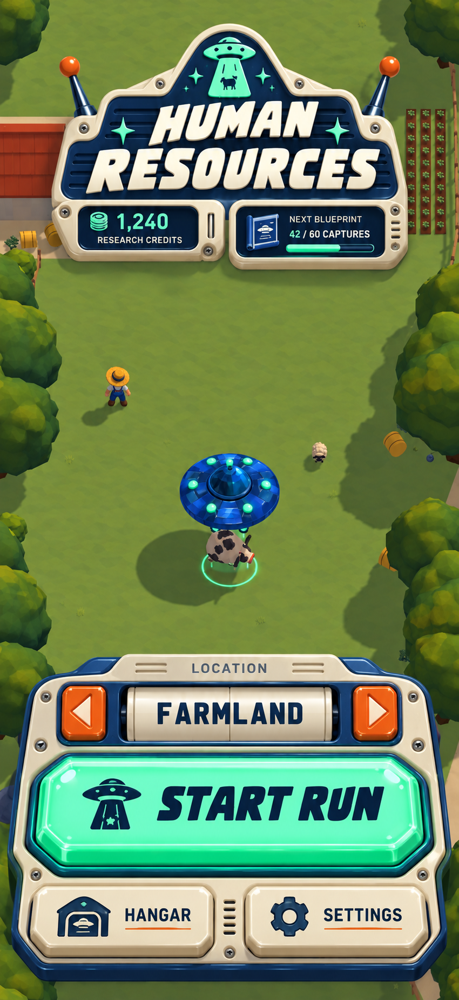
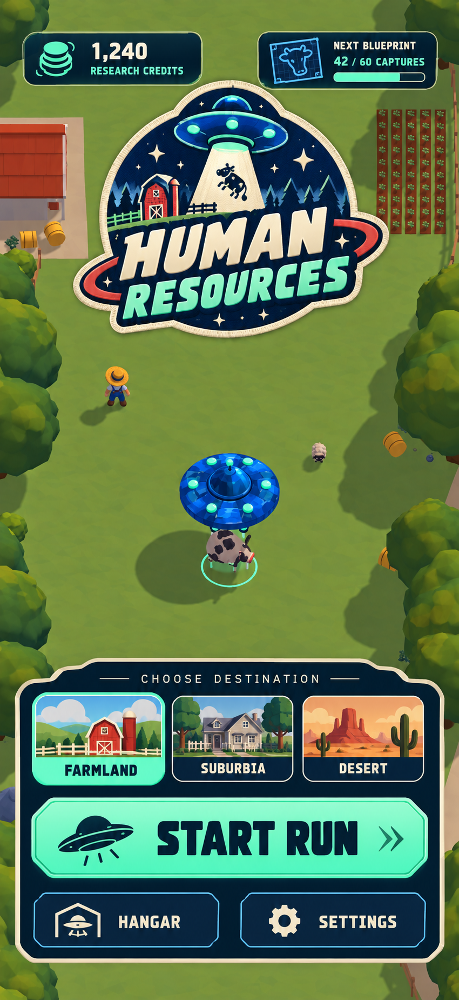
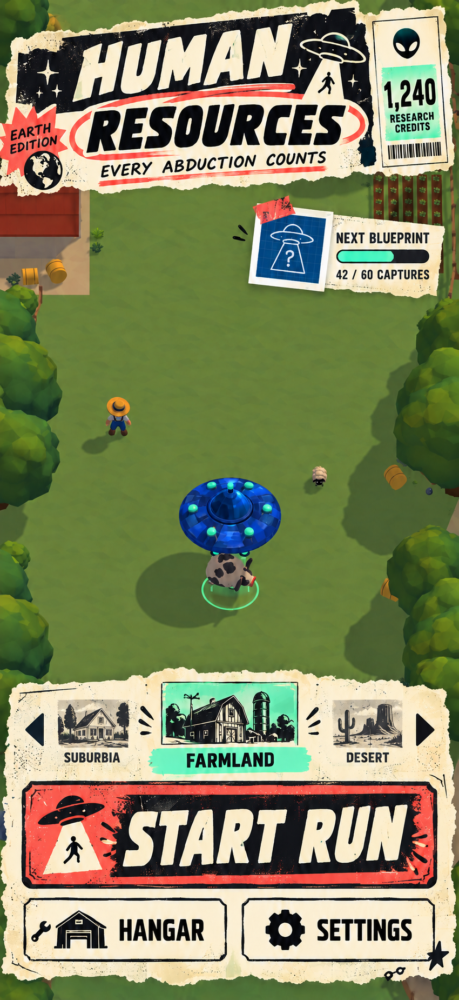
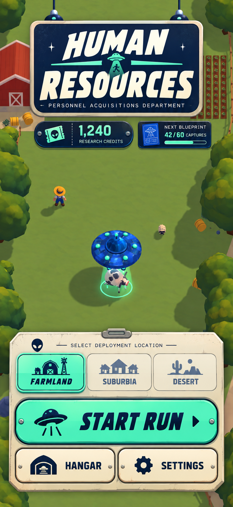

01 · Atomic Pulp
Clear primary action and retro charm.

02 · Analog Signal
Groups secondary information into a telemetry rail.

03 · Invasion Comic
Stronger graphic silhouettes and text contrast.

04 · Classified Dossier
Separates starting a run from optional progression.

05 · Living Biotech
Inviting tactile controls with broad targets.

06 · Cosmic Field Guide
Calmer hierarchy and more visible farmland.

07 · Space Toy Console
Makes pressable controls visually unmistakable.

08 · Interstellar Parks Service
Shows all three destinations at once.

09 · Weekly World Weird
Makes the next blueprint goal easy to see.

10 · Department of Abductions
Combines location clarity, large controls and alien workplace humour.